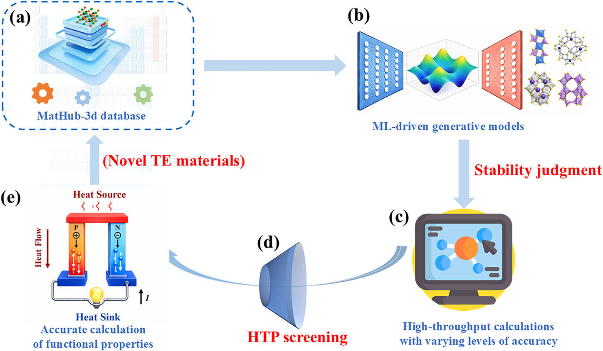

摘要解读
功能材料的逆向设计：以热电材料为例
Inverse design of functional materials: a case study in thermoelectrics
解读更新 2026-09-25 10:00 · 依据公开摘要整理，未核验全文细节
摘要解读已完成，图文文章正在升级。以下保留现有摘要笔记，尚未按图文稿逐项复核。
本文提出热电逆向设计框架，将材料数据库、晶体生成模型与多精度计算筛选串联，从6400个候选结构逐步筛得四种此前未报道的动态稳定化合物。摘要报告，其中两种材料在700 K下的n型热电优值ZT分别达到1.59和2.24。[摘要] 解读：其阅读价值在于生成与物理计算验证的衔接，而非仅扩大候选数量；以上属于计算结果，不能视为实验验证。本导读仅依据元数据与摘要。
研究问题
论文聚焦如何把材料发现从试错转向数据驱动设计，并以热电材料为对象组织候选生成和性能筛选。摘要以“thermoelectric inverse-design (TEID) framework”界定研究方案。[摘要] 解读：核心问题是如何把生成的晶体候选转化为具有物理计算支撑的材料线索。
方法与路线
方法将MatHub-3d数据库、晶体扩散变分自编码器和低、中、高精度筛选串联。生成6400个结构后，依次施加去重与组成约束、机器学习筛选、密度泛函理论计算及声子和输运计算。[摘要] 解读：各阶段逐步收缩候选空间，但摘要没有提供完整阈值与计算参数。
创新与比较
摘要明确的方法特点是将生成模型与“hierarchical screening”结合，在同一流程中连接结构生成、稳定性判断和热电性能计算。[摘要] 解读：可重点考察这种整合方式的贡献；现有资料没有同类方法比较或消融结果，不能认定各模块本身原创，也不能断言整体优于已有方案。
证据与发现
摘要报告四种此前未报道的动态稳定化合物，晶格热导率为0.67–1.72 W m⁻¹ K⁻¹；其中Na₃CaP₃与Si₂Cu₃AgS₆在700 K下的n型ZT分别为1.59和2.24。[摘要] 这些性能来自计算，电输运计算纳入了形变势与极性光学声子散射。
局限与边界
摘要未交代训练数据划分、生成模型基准比较、筛选阈值敏感性及预测误差，也未报告材料合成或性能测量。[摘要] 解读：这些是当前资料的证据缺口，不等于全文必然缺失；动态稳定及热力学筛选结果亦不足以单独证明材料可合成或服役可靠。
方向关联
解读：与给定生成式设计标签的联系直接，表现为先生成晶体结构，再以物理计算筛选。[摘要] 对结构设计，其可迁移启发是把生成模型与约束验证分层衔接；对可靠性研究，可借鉴逐级核验思路，但晶体稳定性不等同于工程可靠性，摘要也未涉及智能运维任务。
后续研究建议
建议：后续取得全文时，优先核对生成目标如何编码、各筛选阶段的阈值与计算成本，再检查ZT对应的载流子条件及输运假设；若迁移到结构设计，可设置等预算基线比较分层筛选收益。这些是阅读与研究建议，并非作者已完成的验证，摘要尚不足以回答。[摘要]
阅读建议
建议优先阅读其生成模型与分层物理筛选的接口设计，尤其关注候选淘汰规则及最终输运计算，适合作为生成式材料设计的方法案例；但不能据摘要认定其适用于工程运维或已获实验验证。[摘要；解读]
原图未改动。以下图注来自标注的来源，不据此补写摘要未报告的实验结论。
已取得的论文原图


原文图注与出处
Fig. 1 | Thermoelectric inverse design (TEID) combines databases, generative modeling and hierarchical first-principles screening to discover functional materials. a MatHub-3d provides the crystal-structure database used for model training. b Machine-learning-driven generative models pro- pose new candidate structures. c High-throughput calculations at increasing levels of accuracy assess the generated candidates. d High-throughput (HTP) screening progressively reduces the candidate set. e Accurate calculations of functional properties identify novel thermoelectric materials. Pale-blue arrows indicate the workflow direction; blue labels identify the data and computational stages, whereas red labels emphasize the screening and final-output stages.
Wang, Xiangdong et al.
原文图页 · CC BY-NC-ND 4.0查看公开摘要
Artificial intelligence is transforming materials discovery from trial-and-error experimentation towards data driven design. Here we present a thermoelectric inverse-design (TEID) framework that integrates the MatHub-3d database, a generative model, and hierarchical screening across low-, medium-, and high-accuracy calculations. Trained on MatHub-3d, a crystal diffusion variational autoencoder generated 6400 candidate structures as the starting point of the workflow. Deduplication and stoichiometric/elemental constraints reduced this set to 1461 compositions. At the low-accuracy stage, pretrained machine-learning models rapidly narrowed the search space: M3GNet identified 1053 dynamically stable structures, and MEGNet returned 1005 thermodynamically viable compounds. At the density functional theory level, automated workflows comprising structural relaxation, convex hull analysis, band gap filtering, and deformation potential approximation electrical transport screening yielded 64 promising high-performance candidates. Phonon and third-order interatomic-force-constant calculations ultimately identified four dynamically stable and previously unreported compounds, DyTlTeSe, Li 2 In 4 Cu 2 Te 8 , Na 3 CaP 3 , and Si 2 Cu 3 AgS 6 with lattice thermal conductivities of 0.67–1.72 W m −1 K −1 . When combined with electrical transport calculations that include both deformation potential and polar optical phonon scattering, Na 3 CaP 3 and Si 2 Cu 3 AgS 6 achieve exceptional n-type performance, with ZT values of 1.59 and 2.24 at 700 K. These results demonstrate TEID as a generalizable framework for data-driven discovery and validation of novel functional materials.